Salvador Dalí on Stamps
A philatelic journey through the art of Salvador Dalí
Salvador Dalí (1904–1989), born in Figueres, Catalonia, was a Spanish painter, writer and one of the most recognizable figures of Surrealism. Educated at the School of Fine Arts in Madrid, he developed a distinctive visual language in which precise, realistic painting meets the unexpected logic of dreams.
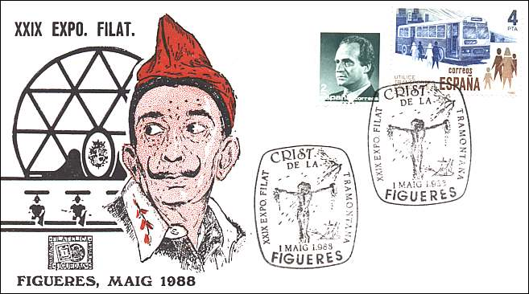
Surrealism and the world of dreams
Dalí embraced Surrealism around 1929. His relationship with the movement later became strained, but his paintings remained closely associated with its exploration of the unconscious. In The Persistence of Memory (1931), soft watches transform familiar objects into an unsettling meditation on time. The painting is held by the Museum of Modern Art in New York.
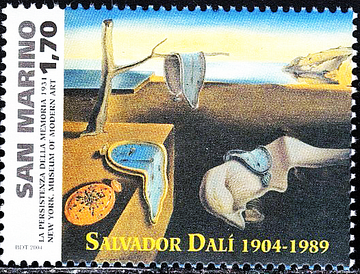
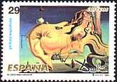
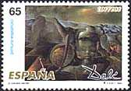
His meticulous draughtsmanship, luminous colours and unexpected juxtapositions made even impossible scenes appear convincing. The Spanish stamps below show the breadth of his imagery, from landscapes to symbolic compositions. His self-portrait also reveals the importance of self-representation in shaping his distinctive public identity.

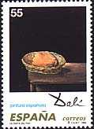

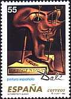
Religious and classical masterpieces
Dalí lived in the United States from 1940 to 1948. His later religious paintings combined classical composition with striking perspectives. Christ of Saint John of the Cross (1951) depicts the Crucifixion from above; its unusual viewpoint is particularly striking in miniature.


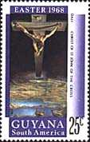
Other religious works include Crucifixion (Corpus Hypercubus) (1954), in the Metropolitan Museum of Art, and The Sacrament of the Last Supper (1955), in the National Gallery of Art, Washington, D.C.
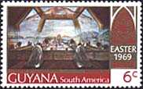


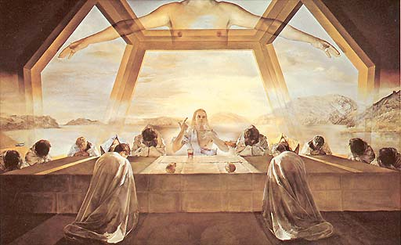
Gala and the centenary of 2004
Gala, Dalí’s wife and muse, appears repeatedly in his art. In Galatea of the Spheres (1952), her face is constructed from floating spheres, reflecting his fascination with atomic physics. The centenary of his birth inspired commemorative issues in several countries.

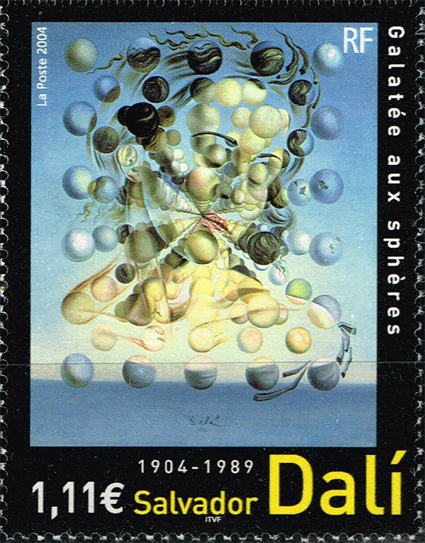
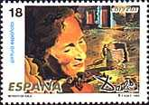
The Bulgarian souvenir sheet combines a sculptural portrait with a landscape and the artist’s signature. Its inscription commemorates the hundredth anniversary of his birth.
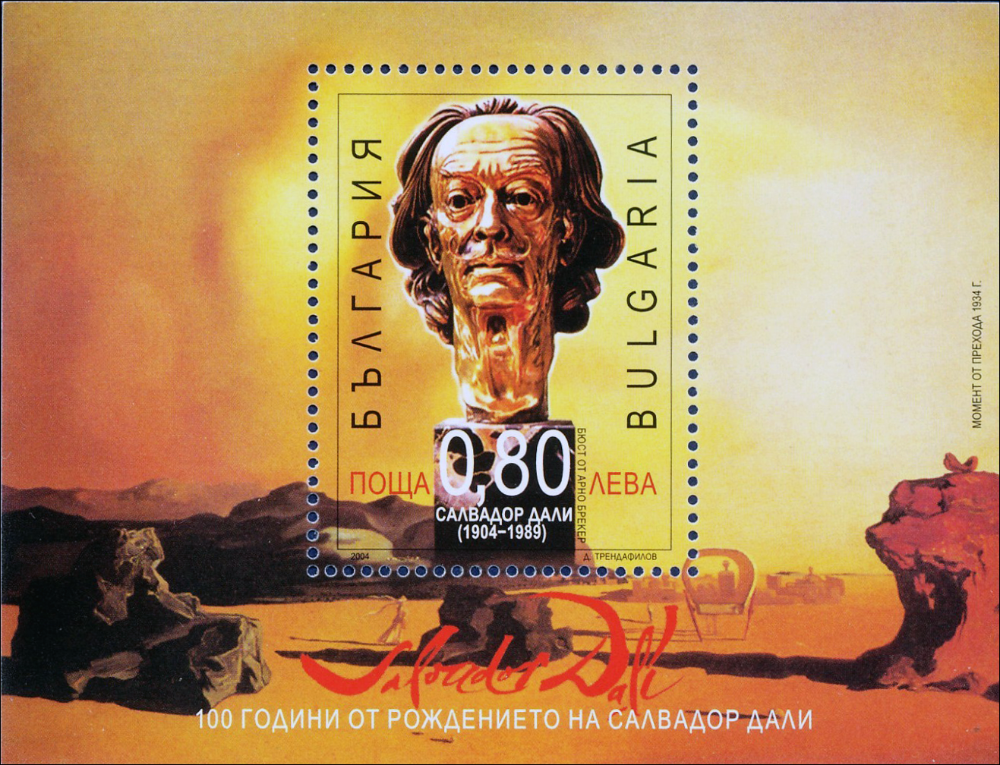
Beyond painting
Dalí also worked in film, book illustration, jewellery, theatrical design and costume. His writings include The Secret Life of Salvador Dalí (1942) and Diary of a Genius. His work reached audiences far beyond the museum through graphic art and postal imagery.
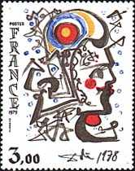
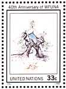
The 110th anniversary of Dalí’s birth (2014)
Born on 11 May 1904, Salvador Dalí was commemorated on the 110th anniversary of his birth in 2014 by two unusual souvenir sheets inscribed Republic of Niger. Both are shaped like a painter’s palette, a fitting tribute to his artistic imagination.
The first combines a portrait of Dalí with a 2,500 F stamp reproducing The Persistence of Memory (1931). The second contains four 750 F stamps illustrating Apparition of a Face and Fruit Dish on a Beach (1938), Atavism at Twilight (1934), Metamorphosis of Narcissus (1937) and Paranoiac-Critical Solitude (1935).
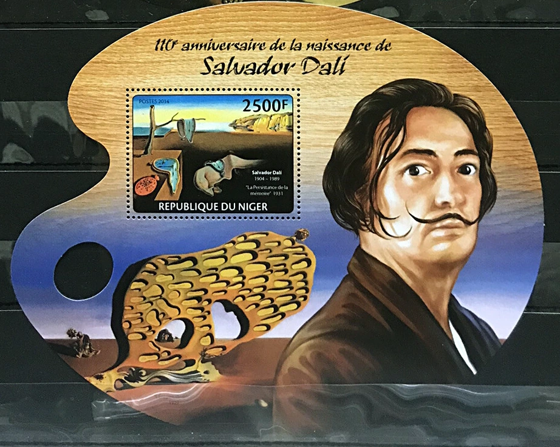
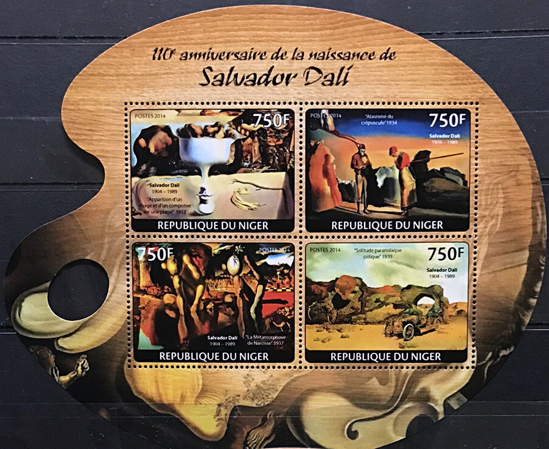